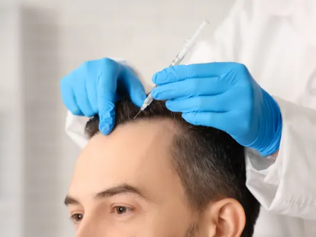

Partnerbijdrage
Hoe worden de haartransplantatie kosten berekend? (Factoren & Prijs)
Gepubliceerd op 26 januari 2026
Onderdeel van de gids Kappers in Nijmegen

Wanneer u overweegt om uw haarlijn te herstellen of kale plekken op te vullen, is de eerste vraag die in u opkomt waarschijnlijk: “Wat gaat dit mij kosten?” Het is een logische vraag, maar het antwoord is zelden een standaard bedrag. De prijs van een medische ingreep is namelijk afhankelijk van verschillende persoonlijke factoren.
Er zijn wereldwijd enorme prijsverschillen, variërend van zeer goedkope aanbiedingen tot exclusieve klinieken die duizenden euro’s vragen. Maar hoe is die prijs opgebouwd? En waar betaalt u nu eigenlijk voor? In dit artikel leggen we uit welke factoren de haartransplantatie kosten beïnvloeden, zodat u een weloverwogen keuze kunt maken.
1. Het aantal benodigde grafts (Haarzakjes)
De belangrijkste factor in de prijsbepaling is vaak de omvang van de behandeling. Iemand die enkel zijn inhammen wil laten opvullen, heeft minder grafts nodig dan iemand die volledig kaal is op de bovenkant van het hoofd.
- Kleine ingreep: Voor het corrigeren van inhammen zijn vaak tussen de 1500 en 2000 grafts nodig.
- Grote ingreep: Voor een volledige dekking van voor naar achter kan dit oplopen tot 4000 of 5000 grafts.
Hoe meer grafts er verplaatst moeten worden, hoe langer het medische team bezig is. Sommige klinieken rekenen een prijs per graft, terwijl anderen werken met pakketprijzen (bijvoorbeeld “tot 4000 grafts”). Het is belangrijk om hier duidelijkheid over te krijgen tijdens uw consult.
2. De gekozen techniek (FUE vs. DHI)
Niet elke haartransplantatiemethode kost evenveel. De techniek die wordt gebruikt, heeft invloed op de duur van de operatie en de benodigde materialen.
- FUE Saffier: Dit is de meest gangbare en populaire methode. Het is efficiënt en levert prachtige resultaten op. Omdat het proces iets sneller gaat dan DHI, ligt de prijs vaak iets lager.
- DHI (Direct Hair Implantation): Deze techniek is arbeidsintensiever omdat er gebruik wordt gemaakt van een speciale implantatiepen (Choi Pen). Dit vereist meer expertise en vaak een groter medisch team. Hierdoor liggen de kosten voor DHI doorgaans hoger dan voor een standaard FUE-behandeling.
3. De locatie: Nederland of Turkije?
Locatie speelt een enorme rol in de haartransplantatie kosten. Turkije staat wereldwijd bekend als het centrum voor haartransplantaties. De reden dat de prijzen in Turkije lager liggen dan in Nederland of België, heeft niets te maken met lagere kwaliteit, maar alles met lagere operationele kosten.
De lonen voor medisch personeel en de vastgoedprijzen zijn in Turkije lager. Hierdoor kunnen Turkse klinieken, zoals Hairtec, hoogwaardige behandelingen (vaak inclusief hotel en VIP-vervoer) aanbieden voor een fractie van de prijs die u in West-Europa zou betalen. U krijgt dus vaak meer luxe en service voor een lager bedrag.
4. De ervaring van het medisch team
Kwaliteit heeft een prijs. Een behandeling uitgevoerd door een zeer ervaren specialist of onder supervisie van een gerenommeerde arts zal duurder zijn dan een behandeling bij een startende kliniek.
Het is verleidelijk om voor de allerlaagste prijs te kiezen, maar wees waakzaam. Een mislukte haartransplantatie herstellen is vaak veel duurder en pijnlijker dan het in één keer goed laten doen. Kies altijd voor een kliniek die transparant is over hun team en resultaten.
5. Nazorg en extra behandelingen
Soms lijken de kosten laag, maar komen er achteraf nog allerlei bedragen bij. Let goed op wat er in het pakket zit:
- Zijn de medicijnen en lotions voor de nazorg inbegrepen?
- Krijgt u een PRP-behandeling (Plaatjes Rijk Plasma) om de groei te stimuleren?
- Is er sprake van garantie?
- Zitten verblijf en transfers in de prijs?
Bij een all-inclusive pakket weet u vooraf precies waar u aan toe bent, zonder verrassingen achteraf.
Terug naar de beginpagina